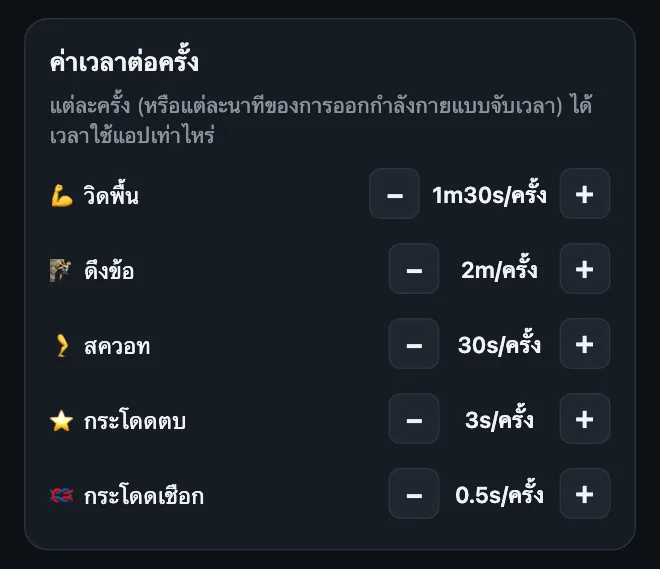

วิดพื้นหนึ่งครั้งควรได้เวลาหน้าจอเท่าไหร่?
สวัสดีครับทุกคน! ใน HonorFit ทุกครั้งที่คุณบันทึกจะแลกเป็นเวลาใช้แอปได้ และคุณเป็นคนตั้งราคาเอง นี่คือคำถามที่ผมได้ยินบ่อยที่สุดหลังจากคนตั้งค่าเสร็จ: วิดพื้นหนึ่งครั้งควรได้เท่าไหร่? หนึ่งนาที? สิบวินาที? มาดูกันว่าผมคิดเรื่องนี้ยังไง
ค่าเริ่มต้น
ถ้าคุณไม่แตะอะไรเลย จะได้แบบนี้:
| ท่าออกกำลังกาย | ค่าเริ่มต้น |
|---|---|
| 💪 วิดพื้น | 1 นาทีต่อครั้ง |
| 🧗 ดึงข้อ | 1 นาที 30 วินาทีต่อครั้ง |
| 🔥 ซิทอัพ, 🦵 สควอท | 30 วินาทีต่อครั้ง |
| ท่าไหนก็ได้ที่คุณเพิ่มเอง | 30 วินาทีต่อครั้ง |
| การออกกำลังกายแบบจับเวลา (เดิน, โยคะ, HIIT) | 30 วินาทีต่อนาที |
| การออกกำลังกายแบบระยะทาง | 5 นาทีต่อกม. หรือ 8 นาทีต่อไมล์ |
| 👟 ก้าวเดิน | 3 นาทีต่อ 1,000 ก้าว |
วิดพื้น 20 ครั้งเลยเท่ากับเล่น Instagram ได้ 20 นาที สำหรับหลายคน แค่นี้ก็พอดีสำหรับการเริ่มต้น แต่สำหรับบางคนก็ใจดีเกินไป หรือขี้เหนียวเกินไป คุณเป็นแบบไหน?
วิธีเลือกแบบบรรทัดเดียว
ลองคิดถึงตัวเลขสองตัว:
- ในวันปกติ คุณโอเคกับการใช้เวลาในแอปที่ถูกบล็อกนานแค่ไหน? ตอบตามจริง ไม่ใช่ตามที่อยากให้เป็น
- คุณจะทำกี่ครั้งจริงๆ เพื่อแลกเวลานั้น โดยกระจายทั้งวัน?
แล้วเอามาหารกัน: ค่าเวลาต่อครั้ง = เวลา ÷ จำนวนครั้ง อยากได้ TikTok หนึ่งชั่วโมงแลกกับวิดพื้น 60 ครั้ง? ก็ 1 นาทีต่อครั้ง อยากได้หนึ่งชั่วโมงเท่าเดิม แต่คุณสควอทได้ 120 ครั้ง? ก็ 30 วินาทีต่อสควอทหนึ่งครั้ง แค่นี้จริงๆ
ถ้าคำตอบข้อ 2 คือ “ไม่ค่อยเยอะ” ก็ไม่เป็นไรเลย ตั้งราคาต่อครั้งให้สูง แล้วใช้ เวลาพื้นฐานรายวัน (ในการตั้งค่า ใช้ฟรี) ให้ทุกวันเริ่มต้นด้วยเวลาที่เก็บไว้แล้วจำนวนหนึ่ง
ชุดตั้งค่าที่หยิบไปใช้ได้เลย
| ท่าออกกำลังกาย | แต่ละครั้งได้ | หนึ่งเซ็ตได้ |
|---|---|---|
| วิดพื้น (มือใหม่) | 1 นาที 30 วินาที | วิดพื้น 10 ครั้ง = 15 นาที |
| วิดพื้น (ทำมาสักพักแล้ว) | 30 วินาที | วิดพื้น 40 ครั้ง = 20 นาที |
| กระโดดตบ | 3 วินาที | กระโดดตบ 100 ครั้ง = 5 นาที |
| กระโดดเชือก (ต่อหนึ่งครั้งที่กระโดด) | 0.5 วินาที | กระโดด 600 ครั้ง = 5 นาที |
| ดึงข้อ | 2 นาที | ดึงข้อ 5 ครั้ง = 10 นาที |
| วิ่ง (ระยะทาง) | 6 นาทีต่อกม. | วิ่ง 5 กม. = 30 นาที |
หลักคือ: ยิ่งแต่ละครั้งง่ายและเร็วเท่าไหร่ ก็ยิ่งควรได้เวลาน้อยลงเท่านั้น กระโดดตบหนึ่งครั้งใช้เวลาประมาณหนึ่งวินาที เลยไม่ควรแลกได้เท่ากับดึงข้อหนึ่งครั้ง
ปุ่มปรับค่าละเอียดขึ้นใน 1.18.0
ก่อนหน้านี้ค่าต่ำสุดคือ 5 วินาที ทำให้ท่าที่เร็วมากๆ (กระโดดเชือก กระโดดตบ) ตั้งราคายาก และการปรับจาก 3 นาทีไปเป็น 10 นาทีก็กดนานมาก มีผู้ใช้อีเมลมาเรื่องทั้งสองข้อ ใน 1.18.0 ปุ่ม −/+ เลยขยับเป็นขั้นที่ฉลาดขึ้น:
- ต่ำกว่า 5 วินาที: 4, 3, 2 และ 1 วินาที แล้วต่อด้วย 0.5, 0.25 และ 0.1 วินาที
- 5 วินาทีถึง 1 นาที: ขั้นละ 5 วินาที
- 1 ถึง 3 นาที: ขั้นละ 15 วินาที
- 3 ถึง 10 นาที: ขั้นละ 30 วินาที
- มากกว่า 10 นาที: ขั้นละ 1 นาที
ปุ่มพวกนี้อยู่สองที่:
- การตั้งค่า → ค่าเวลาต่อครั้ง: แถว −/+ หนึ่งแถวต่อหนึ่งท่า เร็วที่สุดถ้าคุณแค่อยากปรับราคานิดหน่อย
- การตั้งค่า → ท่าออกกำลังกาย → แก้ไข: หน้าแก้ไขแบบเต็ม ที่คุณเพิ่ม เปลี่ยนชื่อ และลบท่าได้ด้วย รวมถึงสลับระหว่างครั้ง นาที และระยะทาง วิธีใช้แบบครบทุกขั้นตอนอยู่ในวิธีปรับแต่งท่าออกกำลังกายใน HonorFit

สัญญาณว่าราคาที่ตั้งไว้ผิด
- คุณจับได้ว่าตัวเองบันทึกครั้งที่ไม่ได้ทำ เวลาของคุณแพงเกินไป นั่นคือระบบความซื่อสัตย์กำลังบอกอะไรคุณอยู่ ค่อยๆ เพิ่มค่าทีละขั้นจนไม่รู้สึกอยากโกงอีก
- เวลาคงเหลือไม่เคยหมด เวลาของคุณถูกเกินไป ลดค่าลงสักหนึ่งหรือสองขั้น หรือบล็อกเพิ่มอีกหนึ่งแอป
- คุณออกกำลังกายแล้วรู้สึกหงุดหงิด น่าจะเลือกท่าผิด ไม่ใช่ตั้งราคาผิด เปลี่ยนเป็นท่าที่คุณไม่เกลียด เดินก็นับ ท่าเบาๆ ก็นับเหมือนกัน
- คุณเก็บเวลาไว้หลายชั่วโมงแล้วใช้หมดตอนกลางคืน เปิด รีเซ็ตตอนเที่ยงคืน (ใช้ฟรี) เวลาที่ไม่ได้ใช้จะได้ไม่สะสมเพิ่มขึ้นเรื่อยๆ
ตั้งค่าอะไรใหม่ ให้เวลามันสักสัปดาห์ก่อนจะเปลี่ยนอีก สองสามวันแรกยังไงก็แปลกๆ อยู่แล้ว
โหมดโหดและโหมดป่วย
สำหรับวันที่การตั้งค่าปกติไม่เหมาะ มีปุ่ม 💀 โหมดโหด ที่คุณใส่ไว้ด้านบนหน้าหลักได้ (การตั้งค่า → โหมดโหดและโหมดป่วย ใช้ฟรี) แตะหนึ่งครั้ง ทุกครั้งจะได้เวลาครึ่งเดียว แตะอีกครั้งเป็น 🤒 โหมดป่วย ที่ทุกครั้งได้เวลาสองเท่า สำหรับตอนที่ไม่สบาย แตะอีกครั้งเพื่อกลับเป็นปกติ ค่าจริงที่คุณตั้งไว้ไม่เคยเปลี่ยน เลยไม่มีอะไรต้องย้อนกลับ
ผมไม่ใช่เทรนเนอร์: ผมเป็นคนทำแอป ไม่ใช่โค้ช ถ้าท่าไหนทำแล้วเจ็บ ให้หยุด และถ้าคุณมีอาการบาดเจ็บหรือปัญหาสุขภาพ ปรึกษาคนที่รู้จักร่างกายคุณว่าอะไรเหมาะกับคุณ แล้วค่อยตั้งค่า HonorFit ตามนั้น
HonorFit Blocker คือแอปบล็อกแอปที่ใช้ฟรีทั้ง iPhone และ Android คุณเลือกท่าออกกำลังกายและค่าเวลาของแต่ละท่าได้เอง ใช้ระบบความซื่อสัตย์ ไม่ใช้กล้อง ไม่มีข้อมูลออกจากมือถือคุณ